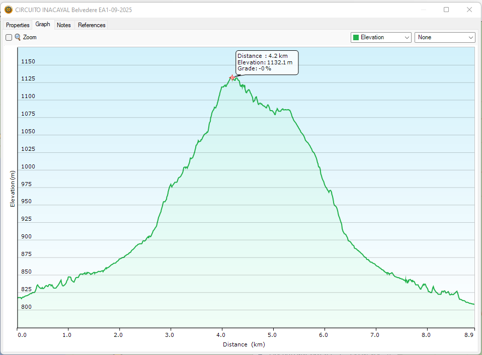

-
Circuito "Inacayal - Belvedere"
Lunes, Miercoles y Viernes 14:00hs. ¡Salimos desde el centro de Villa La Angostura! Blvd. Pascotto
Trek Inacayal - Belvedere Dificultad Duracion Distancia Altura Max Media 4 horas 8.6 km 1180 mts Salida Llegada Altura Min Ascencion 14:00hs 18:00hs 808 mts 380 mts Este sendero, aunque presenta un desafío moderado, está diseñado para que cada persona se sienta cómoda y disfrute de la experiencia a su propio ritmo. Siguiendo el lado izquierdo del valle, llegamos a la parte superior de la Cascada Inacayal y su encantadora caída de agua más pequeña. Tras tomarnos un tiempo para explorar y disfrutar de una merienda, continuamos hacia el mirador del Correntoso antes de regresar a nuestro punto de partida. A lo largo del recorrido, la caminata nos regala vistas de Villa La Angostura, así como del Lago y el Río Correntoso.


Un guía acompaña al grupo en todo momento, ofreciendo consejos y compartiendo prácticas seguras de trekking en la montaña. El recorrido incluye pausas programadas para descansar, hidratarse, ajustar el abrigo y simplemente respirar el aire puro, lo que permite disfrutar plenamente del paisaje, la flora y fauna únicas, y el ritmo tranquilo del Parque Nacional sin apuro alguno.
Totoral, laguna de montaña - Martes y Jueves 14:00hs.
Esta caminata comienza en la ruta hacia Chile, con acceso al inicio del sendero en auto o minibús. Al final de la aventura, el mismo transporte nos llevará de regreso al centro de la ciudad.
A diferencia de la mayoría de las caminatas de la zona, esta comienza con un descenso hacia el escondido lago de montaña Totoral. Aquí, la vegetación cambia respecto a la que suele encontrarse cerca de Villa La Angostura. Fíjate en las delicadas flores rojas que atraen a los picaflores rubí. Tras una caminata sencilla, llegamos a la orilla del lago, donde nos tomamos un tiempo para explorar y disfrutar de una merienda. Podrás darte un refrescante baño en uno de los lagos más cálidos de la zona, con aguas cristalinas que ofrecen una pausa inolvidable en la naturaleza. Al otro lado del lago, un imponente acantilado deja ver cascadas estacionales en primavera.
El regreso hacia la ruta es más exigente, pero lo hacemos a un ritmo cómodo, con tantas pausas como sean necesarias. Al final del día, estarás de vuelta en Villa La Angostura, listo para disfrutar de una merecida cena.